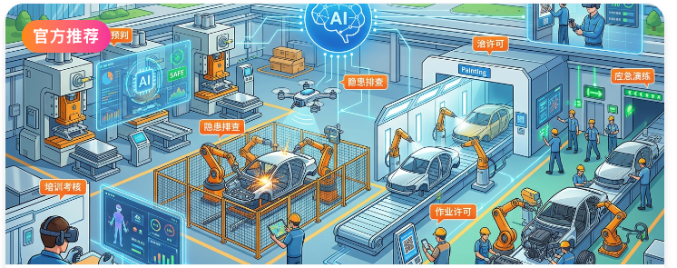
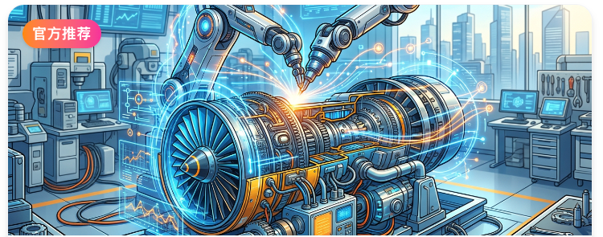
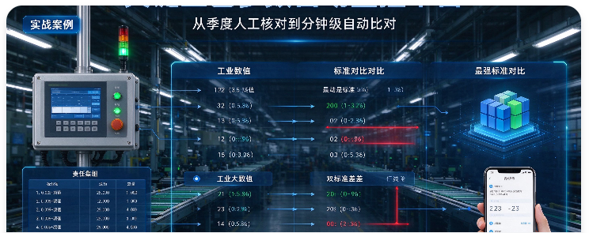
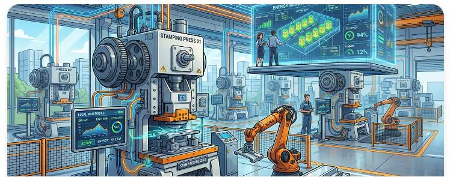
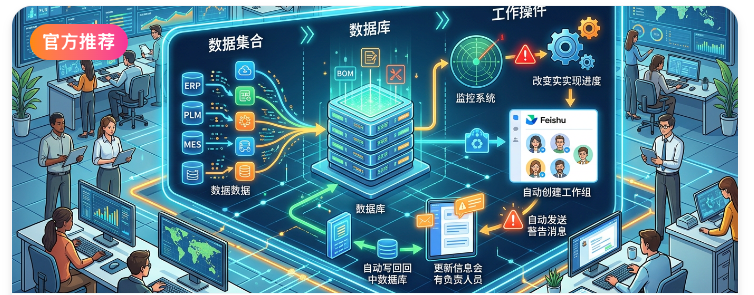
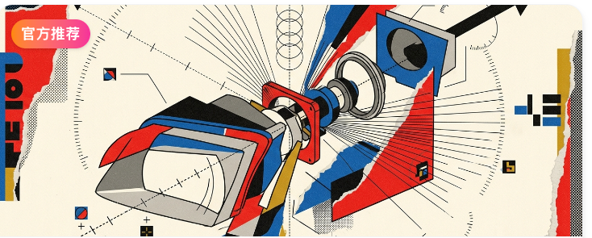
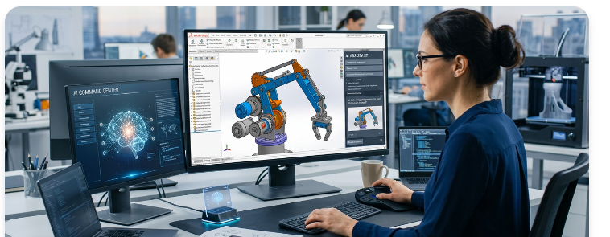

能否从故障处理，走向事前预警？
接下来看故障上报、维修验收与复盘；预测提前量与 OEE 改善待实测。
维修业务有案例基础 · 预测效果待验证AI + 自动化 / 加速制造竞争力
制造业 AI Native 转型如何落地
从安全管理到设备、工艺、能源与设计：八个来自内部分享的应用图例。







同一项任务，看谁推进、能跨越哪些环节，以及如何根据结果改进。
围绕具体问题调用各类 AI 小工具，任务仍由人串联。
人是工具调用与任务推进的节点大多数企业现状员工积累 AI 使用与产品设计能力，集成消息、工具和日常事务；人在工作台接收消息、给出反馈，Agent 自动处理常规环节。
高度自动化，仍由个人组织自己的智能员工AI能力持续积累面向企业经营结果，以跨角色流程和任务状态为基建，让 Agent 推动协作与任务完成。
人在关键节点复核、承担责任连山 AgentOS 定位面向 RSI 式自我改进：识别效率卡点、试验改法，以结果反馈驱动智能飞轮。
人设边界、验证改法并审批发布落地路径探索中LiSEN Agent OS · 从宏观商业洞察到微观生产执行
实现从宏观商业洞察到微观生产执行的全面智能化
通过 Ontology 构建结构化业务知识网络，深度融合模型与 Skills，兼具泛化理解能力与复杂工业场景精准适配
通过数据集成／感知建模／工具构建，为企业智能体提供原材料
个人入口释放场景创新；AgentOS 将分散能力组织成可授权、可交接、可验证的任务。
三个场景分别看：经营价值测算、同构数据科学支撑跨组织联动、服务任务协作与复盘。
能否从故障处理，走向事前预警？
异常能否尽早拦截，并跨组织追溯？
一次服务能否从预约接力到结算？
设备异常提前预警，检修安排在停产日；避免停线的价值按产能、毛利与人力成本测算。
以同构的数据科学产品体系组织各类质量检查点，为跨组织联动提供一致的异常证据与复核口径。
检测分布与空间位置 → 标记可疑芯片 → 测试岗位复核筛选。
拟识别规则内异常行为；工艺 / 质量人员确认后隔离处置。
四序 AOI 图片二次识别 → 预测潜在风险 → 人工复核。
频域特征提取 → 模型判异 → 工程师复核轴承异响风险。
从现象逐级拆解故障零件与原因；责任岗位复核。
以五站服务接力，呈现跨岗位协作、过程留痕与可复盘的目标流程。
前置建群，进店即可接待
手机直连车主，交接有人负责
拍照留痕，核对后进入工单
明确工单、责任人与处理依据
有据可核，结果同步给车主
先看清三个项目各自的任务，再讨论怎样连接与复制。
试点、人才、机制：每一步都有可讨论的过关标志。
建立能力数据、工具、岗位流程的试配
怎样过关任务输入输出、责任人与使用反馈清楚
建立能力业务骨干识别场景、表达经验、参与验证
怎样过关有效做法能被相邻团队复用
建立能力项目筛选、运行复核与受控迭代
怎样过关持续有责任归属、效果验证和经验回流
回到开场的交接点：什么事情，值得我们一起让它走到结果？